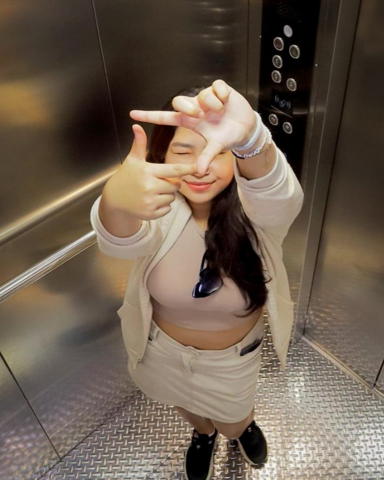
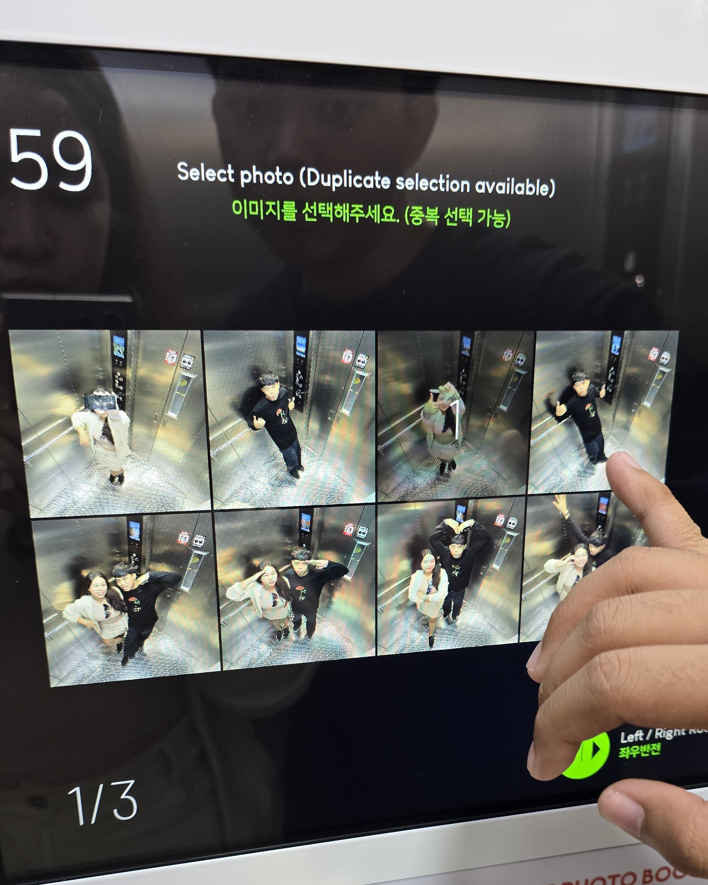
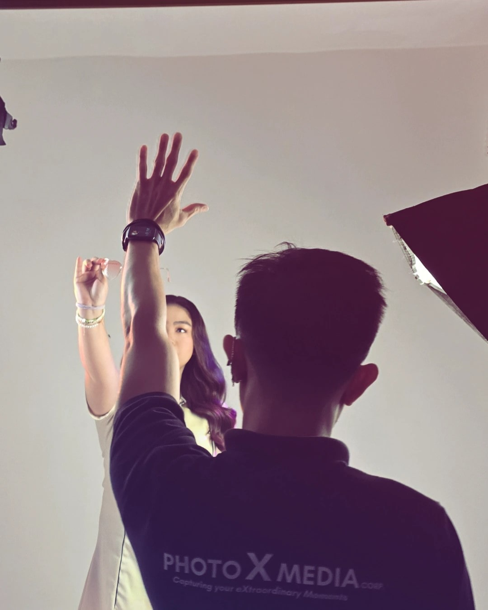
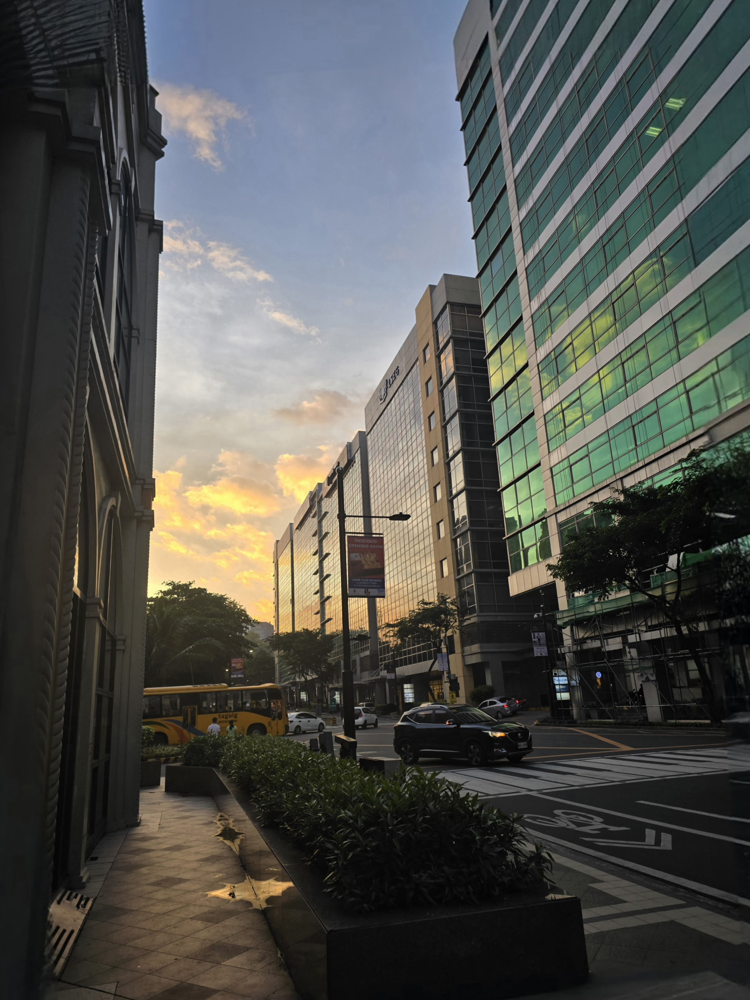
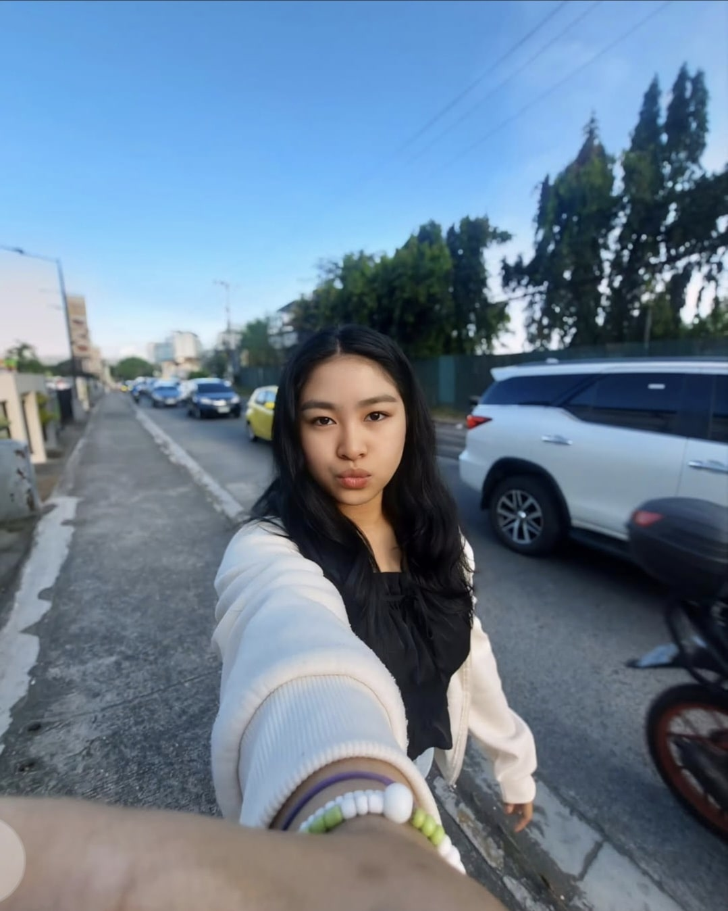
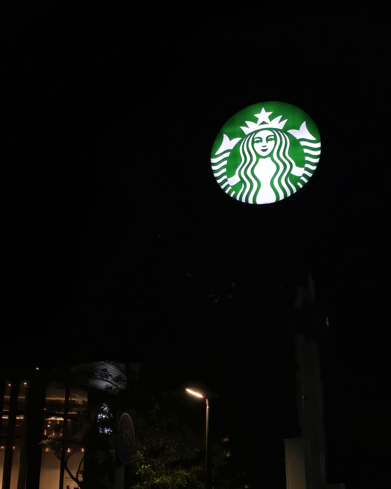
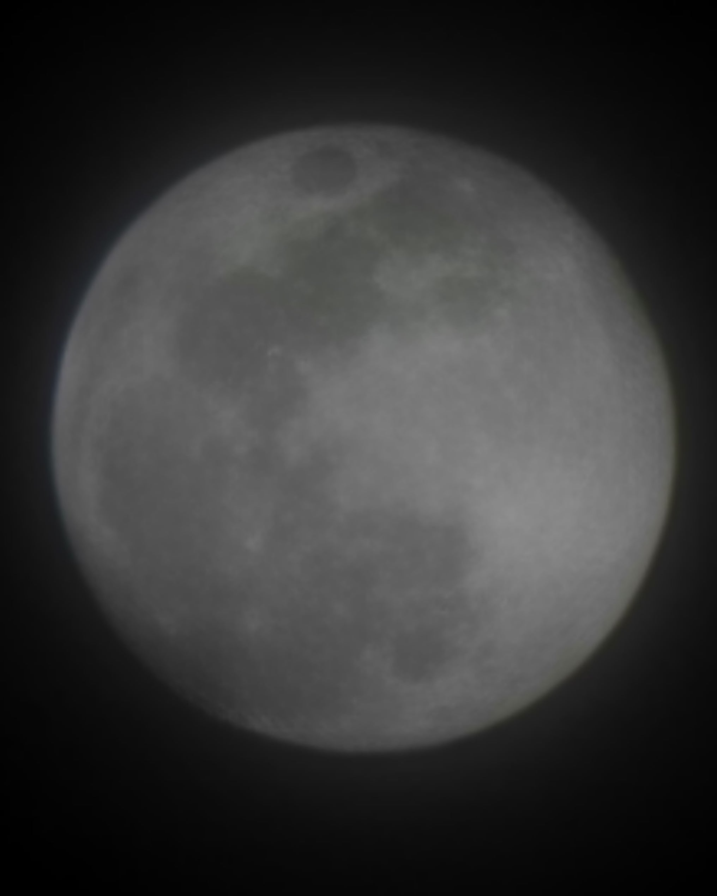
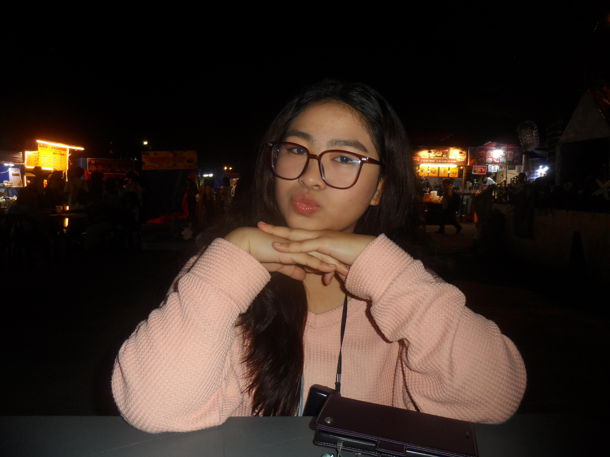
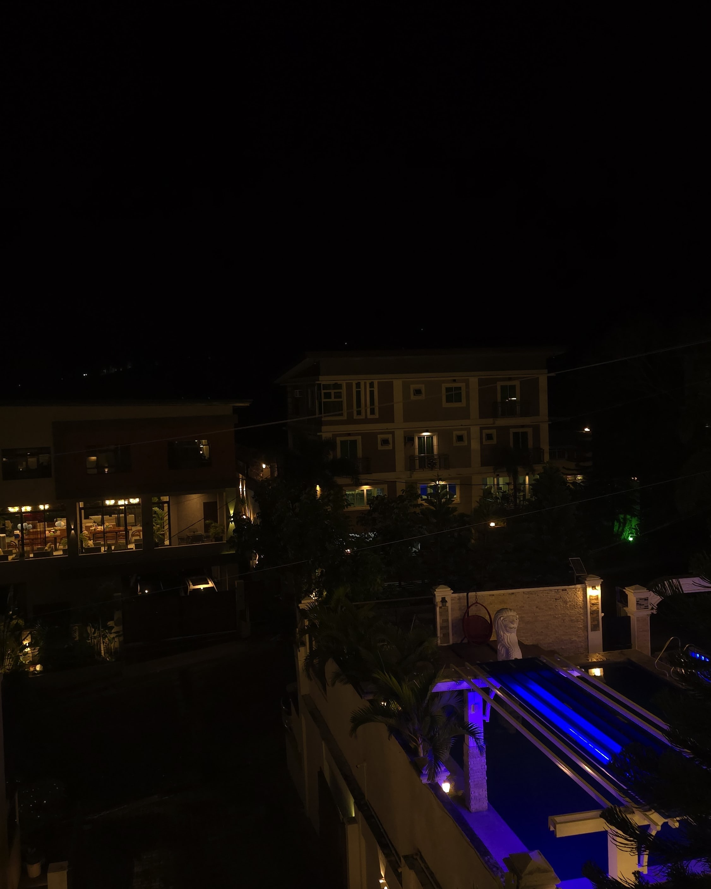

Step into my personal collection of captured moments and creative expressions! From candid snapshots to carefully curated shots, this gallery is a reflection of my passions, adventures, and artistry. Each photo tells a story—whether it’s a glimpse of my everyday life, breathtaking sunsets, or behind-the-scenes studio moments.
Feel free to explore, enjoy, and get a closer look at the little things that bring me joy. Who knows? You might just find a bit of inspiration along the way! 💫✨

#Elevator_Pose

#Photo_Selection

#Studio_Session

#Mckinley's_Sunset

#Sidewalk_Selfie

#Starbs
#Charlie_Da_Dawg

#Full_Moon

#Ugbo_Night

#Laguna_Lights